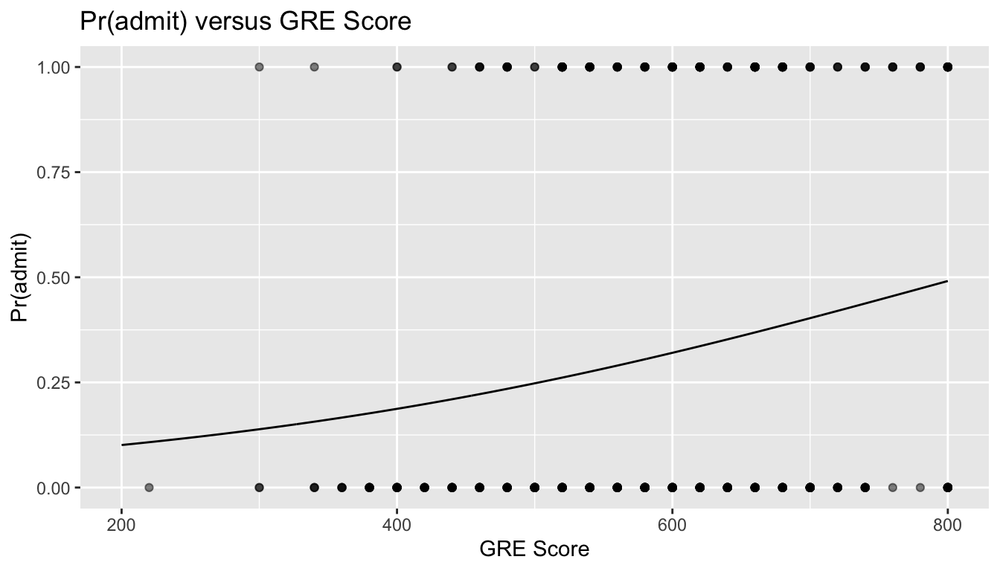
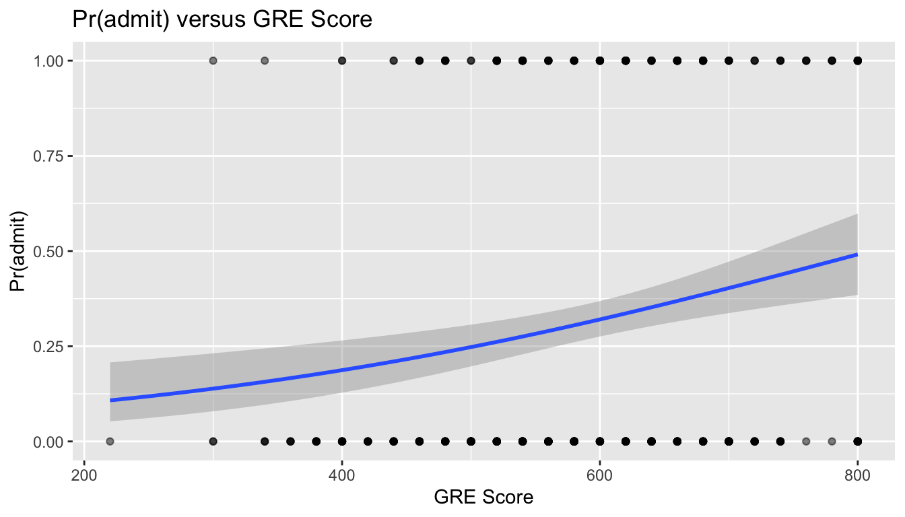
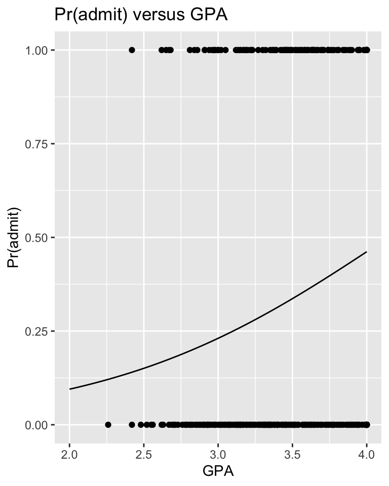
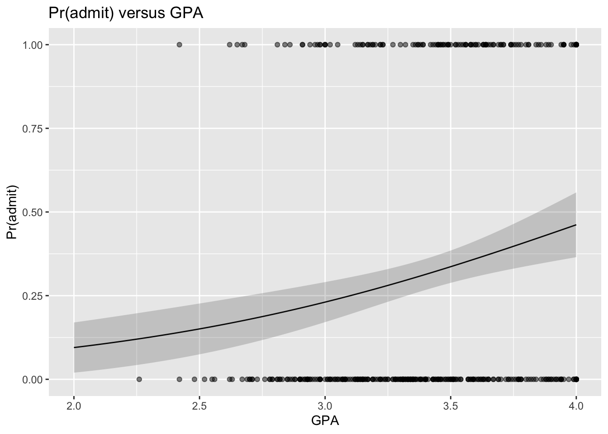
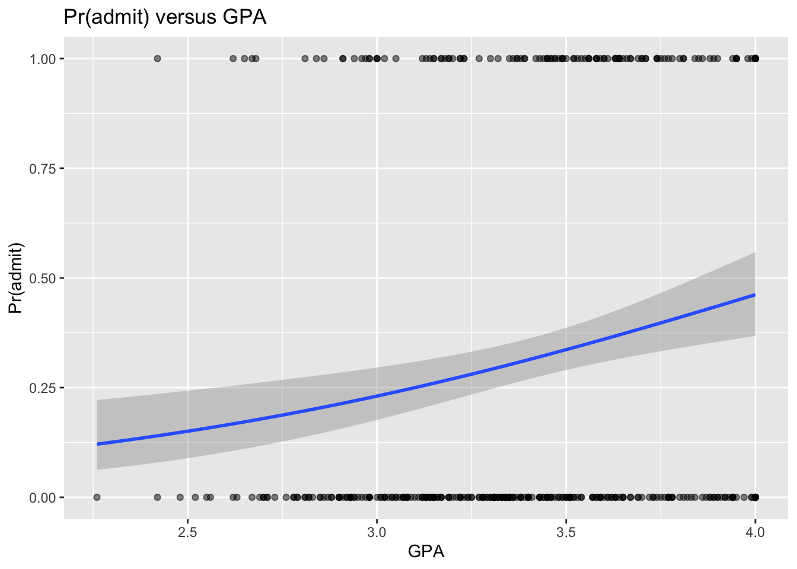
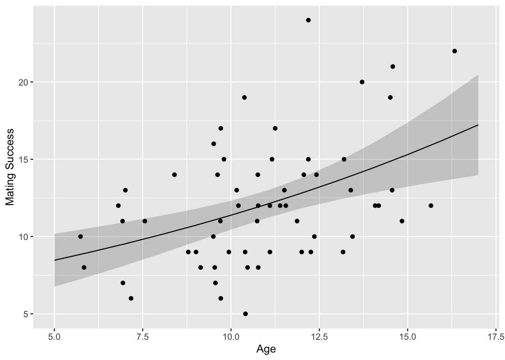

So far, our discussion of regression has centered on standard or “general” linear models that assume that our response variables are continuously distributed and have normally distributed error terms (residuals) from our fitted models and that these error terms show constant variance across the range of our predictor variables. If these assumptions of general linear regression are not met, we can sometimes transform our variables to meet them, but other times we cannot, e.g., when we have binary or count data for a response variable.
In these cases, however, we can use a different regression technique called generalized linear modeling instead of general linear modeling. Generalized linear models, then, extend traditional regression models to allow the expected value of our response variable to depend on our predictor variable(s) through what is called a link function. It allows the response variable to belong to any of a set of distributions belonging to the “exponential” family (e.g., normal, Poisson, binomial), and it does not that require errors (model residuals) be normally distributed. It also does not require homogeneity of variance across the range of predictor variable values and allows for overdispersion (when the observed variance is larger than what the model assumes).
One of the most important differences is that in generalized linear modeling we no longer use ordinary least squares to estimate parameter values, but rather use maximum likelihood or Bayesian approaches.
A generalized linear model consists of three components:
The systematic or linear component, which reflects the linear combination of predictor variables in our model. As in general linear regression, these can be be continuous and/or categorical. Interactions between predictors and polynomial functions of predictors can also be included, as in general linear modeling. [Recall that “linear” simply means the regression model is based on linear combinations of regression coefficients, not of variables.]
The error structure or random component, which refers to the probability distribution of residuals in the response variable after the linear component has been removed. The probability distribution of the residuals in a GLM must be from the exponential family of probability distributions, which includes the normal (Gaussian), Poisson (e.g., if our response variable consists of count data), binomial (e.g., if our response variable is binary, like “yes/no”, “presence/absence”), gamma, negative binomial, etc.
A link function, which links the expected (mean) value of the response variable to the predictors. You can think of this as a transformation function. In GLM, as in general linear modeling, our linear component yields a predicted value, but this value is not the predicted value of our response variable, \(Y\), per se. Rather, the predicted value from the regression model needs to be transformed back into a predicted \(Y\) by applying the inverse of the link function.
NOTE: Using a particular link function is not the same as transforming the response variable. With the link function, we are modeling some function of the expectation of the response variable for given values of the predictor variables, but not the value of the response itself. Link functions typically transform the constrained scale of the expected values of a categorical response variable (such as a probability bounded by 0 and 1, or a mean count that has to be non-negative) to a continuous scale that is unbounded and that can thus be examined using regression. Predicted responses from a GLM (and the associated regression coefficients) typically need to be back-transformed to put them into the more intuitive scale of the original response variable.
Common link functions include:
The identity link, which is used to model \(\mu\), the mean value of \(Y\) and is what we use implicitly in standard linear models. That is, our standard (or general) linear regression model is a particular case of the generalized linear model.
The log link, which is typically used to model log(\(\lambda\)), the log of the mean value of \(Y\). This link function is typically used for modeling for count data and is often referred to as “Poisson” or “log-linear” regression.
The logit link, which is log(\(\pi\)/(1-\(\pi\))), is typically used for modeling binary data, and is often referred to as “logistic” regression. Here, the response is the log of the odds for a binary response.
Model
Error Structure
Canonical Link Function
linear
Gaussian
identity
log linear
Poisson
log
logistic
binomial
logit
gamma
Gamma
reciprocal (inverse)
Standard or “general” linear regression can be viewed as a special case of GLM, where the random component of our model has a normal distribution and the link function is the identity link such that we are modeling an expected (mean) value for \(Y\).
21.4 Model Fitting in GLM
Model fitting and parameter estimation in GLM is commonly done using a maximum likelihood approach, which is an iterative process. To determine the fit of a given model, a GLM evaluates a linear predictor for each value of the response variable with a particular set of parameter values (i.e., \(\beta\) coefficients), then back-transforms the predicted value into the scale of the \(Y\) variable using the inverse of the link function. These predicted values are compared with the observed values of \(Y\). The parameters are then adjusted, and the model is refitted on the transformed scale in an iterative procedure until the fit stops improving and a best set of parameter values has been estimated. In ML approaches, then, the data are taken as a given, and we are trying to find the most likely combination of parameter values, under the given model, to fit those data. We judge the fit of the particular model of the basis of how likely the data would be if the model were correct.
The measure of discrepancy used in a GLM to assess the goodness of fit of the model to the data is called the deviance, which we can think of as analogous to the variance in a general linear model. Deviance is defined as 2\(\times\) (the log-likelihood of a “fully saturated” model minus the log-likelihood of the proposed model). The former is a model that fits the data perfectly. Its likelihood is 1 and its log-likelihood is thus 0, so deviance functionally can be calculated as -2\(\times\) log-likelihood of the proposed model. Because the saturated model does not depend on any estimated parameters and has a likelihood of 1, minimizing the deviance for a particular model is the same as maximizing the likelihood. [For the ML process of parameter estimation, it is actually mathematically easier to maximize the log-likelihood, ln(L), than it is to maximize the likelihood, L, so computationally that is what is usually done.] In generalized linear regression, the sum of squared “deviance residuals” of all the data points is analogous to the sum of squares of the residuals in a standard linear regression (i.e., this is what variation in the expectation of the response that the model does not explain).
The glm() function in R can be used for many types of generalized linear modeling, using a similar formula notation to that we’ve used before, with an additional argument, family=, to specify the kind of error structure we expect in the response variable (“gaussian”, “poisson”, “binomial”, etc.): glm(y ~ x, family = "gaussian").
f <-"https://raw.githubusercontent.com/difiore/ada-datasets/main/zombies.csv"z <-read_csv(f, col_names =TRUE)glm <-glm(data = z, height ~ weight + age, family ="gaussian")summary(glm)
##
## Call:
## glm(formula = height ~ weight + age, family = "gaussian", data = z)
##
## Coefficients:
## Estimate Std. Error t value Pr(>|t|)
## (Intercept) 31.763388 0.470797 67.47 <2e-16 ***
## weight 0.163107 0.002976 54.80 <2e-16 ***
## age 0.618270 0.018471 33.47 <2e-16 ***
## ---
## Signif. codes: 0 '***' 0.001 '**' 0.01 '*' 0.05 '.' 0.1 ' ' 1
##
## (Dispersion parameter for gaussian family taken to be 2.689027)
##
## Null deviance: 18559 on 999 degrees of freedom
## Residual deviance: 2681 on 997 degrees of freedom
## AIC: 3832.1
##
## Number of Fisher Scoring iterations: 2
NOTE: This glm() with family="gaussian" is equivalent to running a standard lm()…
##
## Call:
## lm(formula = height ~ weight + age, data = z)
##
## Residuals:
## Min 1Q Median 3Q Max
## -5.2278 -1.1782 -0.0574 1.1566 5.4117
##
## Coefficients:
## Estimate Std. Error t value Pr(>|t|)
## (Intercept) 31.763388 0.470797 67.47 <2e-16 ***
## weight 0.163107 0.002976 54.80 <2e-16 ***
## age 0.618270 0.018471 33.47 <2e-16 ***
## ---
## Signif. codes: 0 '***' 0.001 '**' 0.01 '*' 0.05 '.' 0.1 ' ' 1
##
## Residual standard error: 1.64 on 997 degrees of freedom
## Multiple R-squared: 0.8555, Adjusted R-squared: 0.8553
## F-statistic: 2952 on 2 and 997 DF, p-value: < 2.2e-16
As with previous models, our explanatory variable, \(X\), can be continuous (leading to a regression analysis) or categorical (leading to an ANOVA-like procedure called an analysis of deviance) or both.
##
## Call:
## glm(formula = height ~ weight + gender, family = "gaussian",
## data = z)
##
## Coefficients:
## Estimate Std. Error t value Pr(>|t|)
## (Intercept) 40.714398 0.627933 64.839 < 2e-16 ***
## weight 0.183945 0.004575 40.206 < 2e-16 ***
## genderMale 0.878857 0.168299 5.222 2.15e-07 ***
## ---
## Signif. codes: 0 '***' 0.001 '**' 0.01 '*' 0.05 '.' 0.1 ' ' 1
##
## (Dispersion parameter for gaussian family taken to be 5.558875)
##
## Null deviance: 18558.6 on 999 degrees of freedom
## Residual deviance: 5542.2 on 997 degrees of freedom
## AIC: 4558.3
##
## Number of Fisher Scoring iterations: 2
21.5 Common Types of GLMs
We will explore two types of GLMs… logistic regression (used when our response variable is binary) and log-linear or Poisson regression (used when our response variable is count data).
Logistic Regression
As alluded to above, when we have a binary response variable (i.e., a categorical variable with two levels, 0 or 1), we actually are interested in modeling \(\pi_i\), which is the probability that\(Y\) equals 1 for a given value of \(X\) (\(x_i\)), rather than \(\mu_i\), the mean value of\(Y\) for a given \(X\), which is what we typically model with general linear regression. The usual model we fit to such data is the logistic regression model, which is a nonlinear model with a sigmoidal shape. The errors or residuals from such a model are not normally distributed but rather have a binomial distribution.
When we do our regression, we actually use as our response variable the natural log of the odds between our two possible outcomes, i.e., the ratio of the probabilities that \(y_i\) = 1 versus that \(y_i\) = 0 for a given \(x_i\), a ratio which we call the logit:
where \(\pi_i\) = the probability that \(y_i\) equals 1 for a given value of \(x_i\) and \((1-\pi)\) = the probability that \(y_i\) equals 0.
The logit transformation, then, is the link function connecting \(Y\) to our predictors. The logit is useful as it converts probabilities, which lie in the range 0 to 1, into the scale of the whole real number line.
We can convert back from the natural log of the odds to an actual odds using the inverse of the logit, which is called the expit:
Suppose we are interested in how a students’ GRE scores, grade point averages (GPA), and ranking of their undergraduate institution (into quartiles, 1 to 4, from high to low), affect admission into graduate school. The response variable, “admitted/not admitted”, is a binary variable, scored as 1/0.
Load in the “graddata.csv” dataset, which comes from this website, and then explore it using head(), summary(), plot(), pairs(), and table().
f <-"https://raw.githubusercontent.com/difiore/ada-datasets/main/graddata.csv"# or f <- "https://stats.idre.ucla.edu/stat/data/binary.csv"d <-read_csv(f, col_names =TRUE)d$rank <-factor(d$rank, levels =c(1, 2, 3, 4))
To use logistic regression to look at how the odds of admission is influenced by GRE scores, we can call the glm() function with a model where admit is our response variable and gre is our predictor variable.
# glm of admit ~ greglm <-glm(data = d, admit ~ gre, family ="binomial")summary(glm)
##
## Call:
## glm(formula = admit ~ gre, family = "binomial", data = d)
##
## Coefficients:
## Estimate Std. Error z value Pr(>|z|)
## (Intercept) -2.901344 0.606038 -4.787 1.69e-06 ***
## gre 0.003582 0.000986 3.633 0.00028 ***
## ---
## Signif. codes: 0 '***' 0.001 '**' 0.01 '*' 0.05 '.' 0.1 ' ' 1
##
## (Dispersion parameter for binomial family taken to be 1)
##
## Null deviance: 499.98 on 399 degrees of freedom
## Residual deviance: 486.06 on 398 degrees of freedom
## AIC: 490.06
##
## Number of Fisher Scoring iterations: 4
Here is the equation representing the results of our model: \[logit(\pi_i) = -2.901344 + 0.003582 \times {gre}\]
Interpretation and Hypothesis Testing
When we get a \(\beta_1\) estimate from a logistic regression, it represents the change in the log(odds) of the outcome for an increase in one unit of our predictor variable, \(X\).
Looking at the coefficient for gre, we see it is positive and, while low, it is significantly different from 0. Thus, increasing GRE score results in an increase in the log(odds) of admission (i.e., students with higher scores are more likely to be admitted). Here, for every one unit change in gre, the log odds of admission (versus non-admission) increases by 0.003582.
Using the predict() function, we can plot our data and fit the change in the admitted/not admitted ratio across the range of GRE scores.
x <-seq(from =200, to =800, by =1)log_odds <-predict(glm, newdata =data.frame(gre = x))# this function will predict the log(odds)...# running the `exp()` function, i.e., `exp(log_odds)` will yield the actual odds!odds <-exp(log_odds)# if we add the argument `type="response"`, the `predict()` function will return the expected response on the scale of the Y variable, i.e., Pr(Y)y <-predict(glm, newdata =data.frame(gre = x), type ="response")# plotting our original data and the modelres <-tibble(gre = x,log_odds = log_odds,odds = odds,pr_admit = y)head(res)
p <-ggplot(data = d, aes(x = gre, y = admit)) +geom_point(alpha =0.5) +xlab("GRE Score") +ylab("Pr(admit)") +ggtitle("Pr(admit) versus GRE Score") +geom_line(data = res, aes(x = gre, y = pr_admit))p

# orp <-ggplot(data = d, aes(x = gre, y = admit)) +geom_point(alpha =0.5) +xlab("GRE Score") +ylab("Pr(admit)") +ggtitle("Pr(admit) versus GRE Score") +geom_smooth(method ="glm", method.args =list(family = binomial))p

By exponentiating the regression coefficient, \(\beta_1\), we can get the actual odds change, as opposed to the log(odds) change, associated with a 1 unit change in GRE score.
(odds_change <-exp(glm$coefficients[2]))
## gre
## 1.003589
Here, a 1 unit increase in gre results in a 0.36% increase in the odds of admission.
As in simple (general) linear regression, the key null hypothesis, \(H_0\), of relevance when fitting a simple logistic regression model is that our regression coefficient, \(\beta\), is zero, i.e. that there is no relationship between the binary response variable and the predictor variable.
There are two common ways to test this \(H_0\). The first is to calculate the Wald statistic for the predictor variable and compare this to the standard normal or \(z\) distribution. This is like a maximum likelihood-based version of a t test. The Wald statistic is, like a t statistic, our \(\beta\) parameter estimate divided by the standard error of that estimate: \(\frac{\beta_1}{SE( \beta_1)}\)). This is most appropriate when sample sizes are large. The “z value” in the summary table for the model shows us the value of the Wald statistic.
summary(glm)
##
## Call:
## glm(formula = admit ~ gre, family = "binomial", data = d)
##
## Coefficients:
## Estimate Std. Error z value Pr(>|z|)
## (Intercept) -2.901344 0.606038 -4.787 1.69e-06 ***
## gre 0.003582 0.000986 3.633 0.00028 ***
## ---
## Signif. codes: 0 '***' 0.001 '**' 0.01 '*' 0.05 '.' 0.1 ' ' 1
##
## (Dispersion parameter for binomial family taken to be 1)
##
## Null deviance: 499.98 on 399 degrees of freedom
## Residual deviance: 486.06 on 398 degrees of freedom
## AIC: 490.06
##
## Number of Fisher Scoring iterations: 4
If we wanted to calculate the Wald statistic by hand, we can do so easily. Below, we use the convenient tidy() function from the {broom} package to pull out a table of results from our GLM very easily. Note that tidy() works on lots of different linear model objects, e.g., those created by lm() and glm() (though not lmer()).
results$wald <- results$estimate / results$std.errorresults$p <-2* (1-pnorm(abs(results$wald)))# 2-tailed p value associated with the Wald statisticresults
Just as when running an lm(), we can get the confidence intervals around our glm() model estimates several different ways. First, we can use the confint() function, giving our GLM model results as an argument, which yields a CI based on a maximum likelihood approach.
# this function returns a CI based on log-likelihood, an iterative ML process
Alternatively, we can use the confint.default() function, which returns a CI based on standard errors, the way we have calculated them by hand previously.
# which is equivalent to how we have calculated CIs previouslyresults$lower <- results$estimate -qnorm(1- alpha /2) * results$std.errorresults$upper <- results$estimate +qnorm(1- alpha /2) * results$std.error(CI <- results |>select(c("term", "lower", "upper")))
## # A tibble: 2 × 3
## term lower upper
## <chr> <dbl> <dbl>
## 1 (Intercept) -4.09 -1.71
## 2 gre 0.00165 0.00551
CHALLENGE
Repeat the logistic regression above, but using gpa rather than gre as the predictor variable.
Is gpa a significant predictor of the odds of admission?
What is the estimate of \(\beta_1\) and the 95% CI around that estimate?
How much does an increase of 1 unit in gpa increase the actual odds (as opposed to the log(odds)) of admission?
What is the 95% CI around these odds?
HINT: For the latter two questions, you will need to apply the exp() function and convert the log(odds) into actual odds.
Code
glm <-glm(data = d, admit ~ gpa, family ="binomial")summary(glm)
##
## Call:
## glm(formula = admit ~ gpa, family = "binomial", data = d)
##
## Coefficients:
## Estimate Std. Error z value Pr(>|z|)
## (Intercept) -4.3576 1.0353 -4.209 2.57e-05 ***
## gpa 1.0511 0.2989 3.517 0.000437 ***
## ---
## Signif. codes: 0 '***' 0.001 '**' 0.01 '*' 0.05 '.' 0.1 ' ' 1
##
## (Dispersion parameter for binomial family taken to be 1)
##
## Null deviance: 499.98 on 399 degrees of freedom
## Residual deviance: 486.97 on 398 degrees of freedom
## AIC: 490.97
##
## Number of Fisher Scoring iterations: 4
Code
(log_odds <- glm$coefficients) # pull out coefficients
Graph the probability of admission, i.e., Pr(admit) or \(\pi_i\), for students with GPAs between 2.0 and 4.0 GPAs, superimposed on a point plot of admission (0 or 1) by gpa.
HINT: Use the predict() function with type="response" to yield \(\pi_i\) directly.
Code
x <-seq(from =2, to =4, length.out =100)y <-predict(glm, newdata =data.frame(gpa = x), type ="response")res <-tibble(gpa = x,pr_admit = y)# IMPORTANT: Using type="response" returns predictions on the scale of the Y variable, in this case Pr(admit). Using the default for the `type=` argument would return a prediction on the logit scale, i.e., the log(odds), which equals log(Pr(admit)/(1-Pr(admit)))head(res)
p <-ggplot(data = d, aes(x = gpa, y = admit)) +geom_point() +xlab("GPA") +ylab("Pr(admit)") +ggtitle("Pr(admit) versus GPA") +geom_line(data = res, aes(x = gpa, y = pr_admit))p

The predict() function can also be used to get confidence intervals around our estimate of the log(odds of admission) (if the type= argument is unspecified or set to “link”), or around the estimate of the probability of admission (if the type= argument is set to “response”), by using the argument se.fit=TRUE.
# plot...# note we start by plotting the model data (res) b/c we are hand-plotting the SE ribbonp <-ggplot(data = res, aes(x = gpa, y = pr_admit)) +geom_line() +geom_ribbon(aes(ymin = lower, ymax = upper), alpha =0.2) +# and then we add in pointsgeom_point(data = d, aes(x = gpa, y = admit), alpha =0.5) +xlab("GPA") +ylab("Pr(admit)") +ggtitle("Pr(admit) versus GPA")p

# or, alternatively...# note here we start with plotting the raw datap <-ggplot(data = d, aes(x = gpa, y = admit)) +geom_point(alpha =0.5) +xlab("GPA") +ylab("Pr(admit)") +ggtitle("Pr(admit) versus GPA") +# and then add in the fitted line via glmgeom_smooth(method ="glm", method.args =list(family = binomial))p

Likelihood Ratio Tests
To evaluate the significance of an overall model in a logistic regression, we can compare the fit of a more complex model to that of a nested, reduced model, just as when we discussed model selection approaches for simple linear regression using partial F tests.
For example, to test the null hypothesis that \(\beta_1\) = 0 for a simple logistic regression model with a single predictor, we would compare the log-likelihood of the full model to that of the reduced, intercept-only model. This is called a likelihood ratio test. Likelihood ratio tests are very similar to partial F tests in that they compare the full model with a nested, reduced model where the explanatory variables of interest are omitted. However, instead of using a test statistic based on a ratio of variances explained by the two models and interpreting that by comparison to an \(F\) distribution, we create a test statistic that is a ratio of the log-likelihoods of the two models and interpret that statistic by comparison to a \(\chi^2\) distribution with a given number of degrees of freedom. Still, the underlying idea is conceptually the same.
A likelihood ratio test comparing a proposed model and a nested, reduced model can be performed using the anova() function where we specify the test= argument to be either LRT or Chisq (these are equivalent).
Recall that when we used the anova() function to run F ratio tests to compare the proportion of variance explained by two general linear models, we specified that `test=“F” and generated an F statistic which was considered relative to an F distribution to calculate a p value.
With generalized linear models, because we are working with deviances and likelihood ratios, the test statistic we generate is ratio of likelihoods (which is equivalent to a difference in deviances, see below) rather than a ratio of variances. That statistic is then considered relative to a \(\chi^2\) distribution to determine the p value. The relevant degrees of freedom for the likelihood ratio test is the # of parameters in the proposed model minus the # parameters in the nested model (here, df = 2 - 1 = 1).
proposed <-glm(data = d, admit ~ gpa, family ="binomial")reduced <-glm(data = d, admit ~1, family ="binomial")anova(reduced, proposed, test ="LRT") # or `test = "Chisq")
With this low p value, we would reject the null hypothesis that removing the variable of interest (gpa) from our model does not result in a loss of fit.
Alternatively, we could use the function lrtest() from the {lmtest} package to do the same likelihood ratio test of the two models.
We can also perform a likelihood ratio test by hand by taking the difference between the deviances of the two models. The deviance for a generalized linear model is analogous to the the residual sum of squares (i.e., unexplained variance) in a general linear model – i.e, lower deviance and lower RSS both mean better models. Deviance is calculated as a kind of “distance” of given model from a fully “saturated” model, i.e., a model where each data point has its own parameters. The likelihood of a fully “saturated” model is 1, thus its log-likelihood is log(1) = 0.
Deviance = 2 \(\times\) (log-likelihood of the saturated model - log-likelihood of the proposed model)
Deviance = 2 \(\times\) (0 - log-likelihood of the proposed model)
Deviance = -2 \(\times\) (log-likelihood of the proposed model)
We can get the deviance associated with a given glm model object by accessing its $deviance slot or by using the deviance() function with the model object as an argument.
# deviance of intercept only model(D_reduced <- reduced$deviance)
## [1] 499.9765
# or...(D_reduced <-deviance(reduced))
## [1] 499.9765
# deviance of proposed model with intercept and one predictor(D_proposed <- proposed$deviance)
## [1] 486.9676
# or...(D_proposed <-deviance(proposed))
## [1] 486.9676
The \(\chi^2\) statistic is then just the difference of the deviances…
(x2 <- D_reduced - D_proposed)
## [1] 13.0089
# this is a measure of how much the fit improves by adding in the predictor(p <-1-pchisq(x2, df =1))
## [1] 0.0003100148
# or(p <-pchisq(x2, df =1, lower.tail =FALSE))
## [1] 0.0003100148
# df = difference in number of parameters in the proposed versus reduced models
The $null.deviance slot of a model object returns, for any model, the deviance associated with an intercept only null model.
(x2 <- reduced$null.deviance - reduced$deviance)
## [1] 5.115908e-12
# this is essentially 0 because here the `reduced` model is the intercept only model!(p <-pchisq(q =0, df =0, lower.tail =FALSE))
Let \(n\) = the number of observations in the data set and \(K\) = the number of predictor terms in a proposed model.
The Saturated Model is a model that assumes each data point has its own parameter, which means we have \(n\) parameters to describe the data
The Null Model is a model that assumes exactly the opposite, i.e., one parameter describes all of the data points, which means only 1 parameter, the intercept, is estimated from the data
The Proposed Model is the model we are fitting by GLM, which has \(K\) parameters terms (1 for the intercept, plus 1 for each predictor variable/interaction term)
Null Deviance = deviance of the Null Model, calculated as 2(log-likelihood of the Saturated Model\(-\) log-likelihood of a Null Model), where df = \(n\) - 1
Residual Deviance = 2(log-likelihood of the saturated model\(-\) log-likelihood of the proposed model), where df = \(n\) - \(K\)
If the null deviance is really small, it means that the Null Model explains the data pretty well. Likewise, if the residual deviance is really small, then the Proposed Model explains the data pretty well.
If you want to compare a Proposed Model against a Null, or intercept-only model, then you can look at Null Deviance\(-\)Residual Deviance for that model, which yields a difference that can be examined against a \(\chi^2\) distribution with \(K\) degrees of freedom.
If you want to compare one Proposed Model against a nested Reduced Model, then you can look at Residual Deviance for the Reduced Model\(-\)Residual Deviance for the Proposed Model, which again yields a difference that can be examined against a \(\chi^2\) distribution with df = (\(K\) for Proposed Model) - (\(K\) for Reduced Model).
This deviance-based, \(\chi^2\)-like statistic is also referred to as a G Square or G statistic. If the p value associated with this statistic is less than the alpha level, it means that the the fuller model is associated with significantly reduced deviance relative to the nested reduced model, and thus has a better fit. We would thus reject the null hypothesis that the fuller model is not better than the reduced one.
Multiple Logistic Regression
Logistic regression can be easily extended to situations with multiple predictor variables, including both continuous and categorical variables, as in our discussion of multiple regression under the general linear model.
CHALLENGE
Using the same “graddata.csv” dataset, run a multiple logistic regression analysis using gpa, gre, and rank to look at student admissions to graduate school. Do not, at first, include any interaction terms.
What variables are significant predictors of the log(odds ratio) of admission?
What is the value of the log(odds ratio) coefficient and the 95% CIs around that value for the two continuous variable (gpa and gre), when taking the effects of the other and of rank into account? What do these translate into on the actual odds ratio scale?
Code
# model with 3 predictorsglmGGR <-glm(data = d, formula = admit ~ gpa + gre + rank, family = binomial)summary(glmGGR)
##
## Call:
## glm(formula = admit ~ gpa + gre + rank, family = binomial, data = d)
##
## Coefficients:
## Estimate Std. Error z value Pr(>|z|)
## (Intercept) -3.989979 1.139951 -3.500 0.000465 ***
## gpa 0.804038 0.331819 2.423 0.015388 *
## gre 0.002264 0.001094 2.070 0.038465 *
## rank2 -0.675443 0.316490 -2.134 0.032829 *
## rank3 -1.340204 0.345306 -3.881 0.000104 ***
## rank4 -1.551464 0.417832 -3.713 0.000205 ***
## ---
## Signif. codes: 0 '***' 0.001 '**' 0.01 '*' 0.05 '.' 0.1 ' ' 1
##
## (Dispersion parameter for binomial family taken to be 1)
##
## Null deviance: 499.98 on 399 degrees of freedom
## Residual deviance: 458.52 on 394 degrees of freedom
## AIC: 470.52
##
## Number of Fisher Scoring iterations: 4
Code
log_coeff <- glmGGR$coefficients # extract coefficients...log_coeff_CI <-confint(glmGGR, level =1- alpha)# and calculate 95% CIs around them(results <-cbind(log_coeff, log_coeff_CI)) # none include 0!
# convert results out of log scalecoeff <-exp(log_coeff) # convert results out of log scalecoeff_CI <-exp(log_coeff_CI)(results <-cbind(coeff, coeff_CI))
Is the model including all three predictors better than models that include just two predictors?
# compare each 2 predictor model to 3 predictor modelglmGG <-glm(data = d, formula = admit ~ gpa + gre, family = binomial)glmGR <-glm(data = d, formula = admit ~ gpa + rank, family = binomial)glmRG <-glm(data = d, formula = admit ~ gre + rank, family = binomial)lrtest(glmGG, glmGGR) # or anova(glmGG, glmGGR, test="Chisq")
## Likelihood ratio test
##
## Model 1: admit ~ gpa + gre
## Model 2: admit ~ gpa + gre + rank
## #Df LogLik Df Chisq Pr(>Chisq)
## 1 3 -240.17
## 2 6 -229.26 3 21.826 7.088e-05 ***
## ---
## Signif. codes: 0 '***' 0.001 '**' 0.01 '*' 0.05 '.' 0.1 ' ' 1
lrtest(glmGR, glmGGR) # or anova(glmGR, glmGGR, test="Chisq")
lrtest(glmRG, glmGGR) # or anova(glmRG, glmGGR, test="Chisq")
## Likelihood ratio test
##
## Model 1: admit ~ gre + rank
## Model 2: admit ~ gpa + gre + rank
## #Df LogLik Df Chisq Pr(>Chisq)
## 1 5 -232.27
## 2 6 -229.26 1 6.0143 0.01419 *
## ---
## Signif. codes: 0 '***' 0.001 '**' 0.01 '*' 0.05 '.' 0.1 ' ' 1
The 3-predictor model is indeed better and any of the 2-predictor models!
Compare a model that includes the three predictors with no interactions to one that includes the three predictors and all possible interactions.
# compare model with and model without interactionsglmGGR_no <-glm(data = d, admit ~ rank + gpa + gre, family ="binomial")glmGGR_all <-glm(data = d, admit ~ rank * gpa * gre, family ="binomial")lrtest(glmGGR_no, glmGGR_all)
## Likelihood ratio test
##
## Model 1: admit ~ rank + gpa + gre
## Model 2: admit ~ rank * gpa * gre
## #Df LogLik Df Chisq Pr(>Chisq)
## 1 6 -229.26
## 2 16 -225.19 10 8.1317 0.616
# or anova(glmGGR_no, glmGGR_all, test="Chisq")
Adding interaction terms to the 3-predictor model does not significantly decrease the deviance!
Log-Linear or Poisson Regression
Sometimes, we want to model a response variable that is in the form of count data (e.g., species richness on an island in terms of distance from the mainland, number of plants of a particular species found in a sampling plot in relation to altitude). Many discrete response variables have counts as possible outcomes. Binomial counts are the number of successes \(x\) in a fixed number of trials, \(n\). Poisson counts are the number occurrences of some event in a certain interval of time (or space). While binomial counts only take values between 0 and n, Poisson counts have no upper bound. We are going to focus on Poisson counts here.
As we have discussed before, for Poisson-distributed variables, the mean and the variance are equal and represented by a single parameter (\(\lambda\)), which is the expectation for both the mean (\(\mu_i\)) and the variance. Since the variance is proportional to the mean (and Poisson residuals are not homoskedastistic), using standard linear models based on normal distributions may not be appropriate.
We have seen that sometimes we can simply transform a response variable with some kind of power transformation to make it appear more normally distributed, but an alternative is to use a GLM with a Poisson error term and use a log transformation as the link function, resulting in in a log-linear model. Thus, when we do Poisson regression, our regression model tries to predict the natural log of the expected value of \(Y\), i.e., \(\mu_i\) (or \(\lambda_i\)).
NOTE: Remember, the R function log(), by default, refers to the natural log.
The link function is thus…
\[g_i=\ln(\mu_i) = \beta_0 + \beta_1x_i\]
… and the inverse link function is…
\[e^{g_i} = \mu_i\ (i.e.,\ \lambda_i)\]
Our regression model formulation is the same as in logistic regression, above, except we use family="Poisson", i.e, glm(y ~ x, family = "poisson")
EXAMPLE:
Researchers studied the reproductive success of a set of male woolly monkeys over a period of 8 years. The age of each monkey at the beginning of the study and the number of successful matings they had during the 8 years were recorded, and they were also scored into ranks of “high”, “medium”, and “low”. We assume the number of matings follows a Poisson distribution, and we are interested in exploring whether mating success depends on the age of the monkey in question.
f <-"https://raw.githubusercontent.com/difiore/ada-datasets/main/woollydata.csv"d <-read_csv(f, col_names =TRUE)head(d)
## # A tibble: 6 × 4
## name success age rank
## <chr> <dbl> <dbl> <chr>
## 1 Aaron 15 9.8 medium
## 2 Adam 14 12.1 medium
## 3 Agustin 22 16.3 high
## 4 Alan 9 8.79 low
## 5 Andrew 12 6.81 low
## 6 Anthony 11 14.8 low
## name success age rank
## James : 2 Min. : 5.00 Min. : 5.740 low :24
## Aaron : 1 1st Qu.: 9.00 1st Qu.: 9.555 medium:12
## Adam : 1 Median :12.00 Median :10.765 high :24
## Agustin: 1 Mean :12.12 Mean :10.884
## Alan : 1 3rd Qu.:14.00 3rd Qu.:12.285
## Andrew : 1 Max. :24.00 Max. :16.330
## (Other):53
# first, some exploratory visualization(p <-ggplot(data = d, aes(x = age, y = success)) +geom_point()+xlab("Age") +ylab("Mating Success"))
# glm of success ~ ageglm <-glm(data = d, success ~ age, family ="poisson")summary(glm)
##
## Call:
## glm(formula = success ~ age, family = "poisson", data = d)
##
## Coefficients:
## Estimate Std. Error z value Pr(>|z|)
## (Intercept) 1.84007 0.17696 10.398 < 2e-16 ***
## age 0.05920 0.01541 3.841 0.000122 ***
## ---
## Signif. codes: 0 '***' 0.001 '**' 0.01 '*' 0.05 '.' 0.1 ' ' 1
##
## (Dispersion parameter for poisson family taken to be 1)
##
## Null deviance: 75.972 on 59 degrees of freedom
## Residual deviance: 61.179 on 58 degrees of freedom
## AIC: 322.88
##
## Number of Fisher Scoring iterations: 4
In the summary(), note that the residual deviance is slighly higher than the residual degrees of freedom, which suggests that our data are slightly overdispersed (i.e., there is some extra, unexplained variation in the response, where the variance is greater than the mean). If this were dramatic, we might use “quasipoisson” for the family instead, but we will stick with “poisson”.
We can generate a nice summary table of results with tidy(), and by setting conf.int = TRUE we use an ML approach to estimate the CI.
Now, let’s fit a “line” of best fit through our data, along with 95% CI around this “line”. We want to plot the relationship between success, rather than log(success), and age, so this relationship will not actually be linear but log-linear.
alpha <-0.05x <-data.frame(age =seq(from =5, to =17, by =1))prediction <-cbind(age = x, predict(glm, newdata = x, type ="response", se.fit =TRUE))# IMPORTANT: Using the argument `type="response"` makes our prediction be in units of our actual Y variable, success, rather than log(success)prediction$lower <- prediction$fit -qnorm(1- alpha /2) * prediction$se.fitprediction$upper <- prediction$fit +qnorm(1- alpha /2) * prediction$se.fithead(prediction)
p <- p +geom_line(data = prediction, aes(x = age, y = fit)) +geom_ribbon(data = prediction, aes(x = age, y = fit,ymin = lower, ymax = upper ), alpha =0.2)p # note the curvilinear "line" of best fit

Is this model better than an intercept-only model? YES!
We can see this by doing a likelihood ratio test.
proposed <-glm(data = d, success ~ age, family ="poisson")reduced <-glm(data = d, success ~1, family ="poisson")# using the `lrtest()` functionlrtest(reduced, proposed)
# or, based on the deviance difference between the reduced and proposed models(x2 <- reduced$deviance - proposed$deviance)
## [1] 14.79362
(p <-1-pchisq(x2, df =1))
## [1] 0.0001199407
# or, calculating the model deviances by hand using the `logLik()` function (which returns the log-likelihood of the model) and then taking the difference in deviance(D_reduced <--2*logLik(reduced))
## 'log Lik.' 333.6736 (df=1)
(D_proposed <--2*logLik(proposed))
## 'log Lik.' 318.8799 (df=2)
(x2 <- D_reduced - D_proposed)
## 'log Lik.' 14.79362 (df=1)
(p <-pchisq(x2, df =1, lower.tail =FALSE))
## 'log Lik.' 0.0001199407 (df=1)
# df = difference in # of parameters in the proposed versus reduced model
As mentioned in Module 22, the Akaike Information Criterion, or AIC, is another way of evaluating and comparing related models. For similar models, those with lower AIC models are preferred over those with higher AIC. The AIC value is based on the deviance associated with the model, but it penalizes model complexity. Much like an adjusted \(R^2\), its intent is to prevent you from including irrelevant predictors when choosing among similar models. Models with low AICs represent a better fit to the data, and if many models have similarly low AICs, you should choose the one with the fewest model terms. For both continuous and categorical predictors, we prefer comparing full and reduced models against one another to test individual terms rather than comparing the fit of all possible models and trying and select a single “best” one. Thus, AIC values are useful for comparing models, but they are not interpretable on their own. The logLik() function returns the log-likelihood associated with a particular model and can be used to calculate AIC values by hand.
(AICproposed <-2*2-2*logLik(proposed))
## 'log Lik.' 322.8799 (df=2)
# AIC = (2 * # parameters estimated() minus (2 * log-likelihood of model)# for the proposed model, we estimated 2 parameters(AICreduced <-2*1-2*logLik(reduced))
## 'log Lik.' 335.6736 (df=1)
# for the reduced model, we estimated 1 parameter
Here, the log-likelihood of the model including age as a predictor is much lower than the log-likelihood of the reduced (intercept only) model, so we prefer the former.
CHALLENGE
Using the woolly monkey mating success data set, explore multiple Poisson regression models of [a] mating success in relation to rank and [b] mating success in relation to age + rank, and [c] mating success in relation to age + rank + their interaction on your own. What conclusions can you come to about the importance of rank and rank in combination with age versus age alone?
Mating Success in Relation to Rank
Code
# glm of success ~ rankglm1 <-glm(data = d, success ~ rank, family ="poisson")summary(glm1)
##
## Call:
## glm(formula = success ~ rank, family = "poisson", data = d)
##
## Coefficients:
## Estimate Std. Error z value Pr(>|z|)
## (Intercept) 2.36321 0.06262 37.737 <2e-16 ***
## rankmedium 0.28178 0.09919 2.841 0.0045 **
## rankhigh 0.17247 0.08498 2.029 0.0424 *
## ---
## Signif. codes: 0 '***' 0.001 '**' 0.01 '*' 0.05 '.' 0.1 ' ' 1
##
## (Dispersion parameter for poisson family taken to be 1)
##
## Null deviance: 75.972 on 59 degrees of freedom
## Residual deviance: 67.229 on 57 degrees of freedom
## AIC: 330.93
##
## Number of Fisher Scoring iterations: 4
Generalized linear modeling extends general linear modeling to accommodate response variables that are not continuously distributed (e.g., binary responses, count data, proportion data)
What is being predicted in generalized linear model is some function of the expected value of an observed response, not the observed response per se
The link/inverse link function is what connects the response predicted by the GLM back to the scale of the original observed response
For binary response variables, we use logistic regression, where the response variable is natural log of the odds ratio between two possible outcomes:
For response variables that are open-ended counts, we use log-linear or Poisson regression, where the response variable is the natural log of the expected value of the count
\[\lambda_i = \beta_0 + \beta_1x_i\]
As with simple (or general) linear models, we can create generalized linear models with more than one predictor variable, with a combination of continuous and categorial predictors, and with interactions between predictors
Source Code
# Generalized Linear Models {#module-23}## Objectives> In this module, we extend our discussion of regression modeling to include generalized linear models.## Preliminaries- Install and load this package in ***R***: [{lmtest}](https://cran.r-project.org/web/packages/lmtest/lmtest.pdf)- Load {tidyverse} and {broom}```{r}#| include: false#| message: falselibrary(tidyverse)library(broom)library(lmtest)```## Extending the "General" ModelSo far, our discussion of regression has centered on standard or "general" linear models that assume that our response variables are continuously distributed and have normally distributed error terms (residuals) from our fitted models and that these error terms show constant variance across the range of our predictor variables. If these assumptions of general linear regression are not met, we can sometimes transform our variables to meet them, but other times we cannot, e.g., when we have binary or count data for a response variable.In these cases, however, we can use a different regression technique called **generalized linear modeling** instead of general linear modeling. Generalized linear models, then, extend traditional regression models to allow the expected value of our response variable to depend on our predictor variable(s) through what is called a **link function**. It allows the response variable to belong to any of a set of distributions belonging to the "exponential" family (e.g., normal, Poisson, binomial), and it does not that require errors (model residuals) be normally distributed. It also does not require homogeneity of variance across the range of predictor variable values and allows for overdispersion (when the observed variance is larger than what the model assumes).One of the most important differences is that in generalized linear modeling we no longer use ordinary least squares to estimate parameter values, but rather use maximum likelihood or Bayesian approaches.A generalized linear model consists of three components:- The **systematic or linear component**, which reflects the linear combination of predictor variables in our model. As in general linear regression, these can be be continuous and/or categorical. Interactions between predictors and polynomial functions of predictors can also be included, as in general linear modeling. [Recall that "linear" simply means the regression model is based on linear combinations of regression coefficients, not of variables.]- The **error structure** or **random component**, which refers to the probability distribution of residuals in the response variable after the linear component has been removed. The probability distribution of the residuals in a GLM must be from the exponential family of probability distributions, which includes the *normal* (Gaussian), *Poisson* (e.g., if our response variable consists of count data), *binomial* (e.g., if our response variable is binary, like "yes/no", "presence/absence"), *gamma*, *negative binomial*, etc.- A **link function**, which links the expected (mean) value of the response variable to the predictors. You can think of this as a transformation function. In GLM, as in general linear modeling, our linear component yields a predicted value, but this value is not the predicted value of our response variable, $Y$, *per se*. Rather, the predicted value from the regression model needs to be transformed back into a predicted $Y$ by applying the inverse of the link function.> **NOTE:** Using a particular link function is not the same as transforming the response variable. With the link function, we are modeling **some function of the expectation of the response variable** for given values of the predictor variables, but not the value of the response itself. Link functions typically transform the constrained scale of the expected values of a categorical response variable (such as a probability bounded by 0 and 1, or a mean count that has to be non-negative) to a continuous scale that is unbounded and that can thus be examined using regression. Predicted responses from a GLM (and the associated regression coefficients) typically need to be back-transformed to put them into the more intuitive scale of the original response variable.Common link functions include:- The **identity link**, which is used to model $\mu$, the mean value of $Y$ and is what we use implicitly in standard linear models. That is, our standard (or general) linear regression model is a particular case of the generalized linear model.- The **log link**, which is typically used to model **log(**$\lambda$), the log of the mean value of $Y$. This link function is typically used for modeling for count data and is often referred to as “Poisson” or “log-linear” regression.- The **logit link**, which is **log(**$\pi$/(1-$\pi$)), is typically used for modeling binary data, and is often referred to as "logistic" regression. Here, the response is the log of the odds for a binary response.| Model | Error Structure | Canonical Link Function ||------------|-----------------|-------------------------|| linear | Gaussian | identity || log linear | Poisson | log || logistic | binomial | logit || gamma | Gamma | reciprocal (inverse) |Standard or "general" linear regression can be viewed as a special case of GLM, where the random component of our model has a *normal distribution* and the link function is the *identity link* such that we are modeling an expected (mean) value for $Y$.## Model Fitting in GLMModel fitting and parameter estimation in GLM is commonly done using a maximum likelihood approach, which is an iterative process. To determine the fit of a given model, a GLM evaluates a linear predictor for each value of the response variable with a particular set of parameter values (i.e., $\beta$ coefficients), then back-transforms the predicted value into the scale of the $Y$ variable using the inverse of the link function. These predicted values are compared with the observed values of $Y$. The parameters are then adjusted, and the model is refitted on the transformed scale in an iterative procedure until the fit stops improving and a best set of parameter values has been estimated. In ML approaches, then, the data are taken as a given, and we are trying to find the most likely combination of parameter values, under the given model, to fit those data. We judge the fit of the particular model of the basis of **how likely the data would be if the model were correct.**The measure of discrepancy used in a GLM to assess the goodness of fit of the model to the data is called the **deviance**, which we can think of as analogous to the variance in a general linear model. Deviance is defined as **2** $\times$ (the log-likelihood of a "fully saturated" model minus the log-likelihood of the proposed model). The former is a model that fits the data perfectly. Its likelihood is 1 and its log-likelihood is thus 0, so deviance functionally can be calculated as **-2** $\times$ log-likelihood of the proposed model. Because the saturated model does not depend on any estimated parameters and has a likelihood of 1, *minimizing the deviance* for a particular model is the same as *maximizing the likelihood*. [For the ML process of parameter estimation, it is actually mathematically easier to maximize the log-likelihood, **ln(L)**, than it is to maximize the likelihood, **L**, so computationally that is what is usually done.] In generalized linear regression, the sum of squared "deviance residuals" of all the data points is analogous to the sum of squares of the residuals in a standard linear regression (i.e., this is what variation in the expectation of the response that the model does not explain).The `glm()` function in ***R*** can be used for many types of generalized linear modeling, using a similar formula notation to that we've used before, with an additional argument, `family=`, to specify the kind of error structure we expect in the response variable ("gaussian", "poisson", "binomial", etc.): `glm(y ~ x, family = "gaussian")`.```{r}#| message: falsef <-"https://raw.githubusercontent.com/difiore/ada-datasets/main/zombies.csv"z <-read_csv(f, col_names =TRUE)glm <-glm(data = z, height ~ weight + age, family ="gaussian")summary(glm)```> **NOTE:** This `glm()` with `family="gaussian"` is equivalent to running a standard `lm()`...```{r}lm <-lm(data = z, height ~ weight + age)summary(lm)```As with previous models, our explanatory variable, $X$, can be continuous (leading to a regression analysis) or categorical (leading to an ANOVA-like procedure called an *analysis of deviance*) or both.```{r}z$gender <-factor(z$gender)glm <-glm(data = z, height ~ weight + gender, family ="gaussian")summary(glm)```## Common Types of GLMsWe will explore two types of GLMs... **logistic regression** (used when our response variable is binary) and **log-linear or Poisson regression** (used when our response variable is count data).### Logistic Regression {.unnumbered}As alluded to above, when we have a binary response variable (i.e., a categorical variable with two levels, 0 or 1), we actually are interested in modeling $\pi_i$, which is the *probability that* $Y$ equals 1 for a given value of $X$ ($x_i$), rather than $\mu_i$, the *mean value of* $Y$ for a given $X$, which is what we typically model with general linear regression. The usual model we fit to such data is the logistic regression model, which is a nonlinear model with a sigmoidal shape. The errors or residuals from such a model are not normally distributed but rather have a binomial distribution.When we do our regression, we actually use as our response variable the natural log of the **odds** between our two possible outcomes, i.e., the ratio of the probabilities that $y_i$ = 1 versus that $y_i$ = 0 for a given $x_i$, a ratio which we call the *logit*:$$g_i = logit(\pi_i) = \ln[\frac{\pi_i}{(1-\pi_i)}] = \beta_0 + \beta_1x_i$$where $\pi_i$ = the probability that $y_i$ equals 1 for a given value of $x_i$ and $(1-\pi)$ = the probability that $y_i$ equals 0.The *logit* transformation, then, is the link function connecting $Y$ to our predictors. The logit is useful as it converts probabilities, which lie in the range 0 to 1, into the scale of the whole real number line.We can convert back from the *natural log of the odds* to an actual odds using the inverse of the *logit*, which is called the *expit*:$$expit(g_i) = \frac{e^{g_i}}{1+e^{g_i}} = \frac{1}{1+e^{-g_i}}=\pi_i$$### EXAMPLE: {.unnumbered}Suppose we are interested in how a students' GRE scores, grade point averages (GPA), and ranking of their undergraduate institution (into quartiles, 1 to 4, from high to low), affect admission into graduate school. The response variable, "admitted/not admitted", is a binary variable, scored as 1/0.Load in the "graddata.csv" dataset, which comes from [this website](https://stats.idre.ucla.edu/other/dae/), and then explore it using `head()`, `summary()`, `plot()`, `pairs()`, and `table()`.```{r}#| message: falsef <-"https://raw.githubusercontent.com/difiore/ada-datasets/main/graddata.csv"# or f <- "https://stats.idre.ucla.edu/stat/data/binary.csv"d <-read_csv(f, col_names =TRUE)d$rank <-factor(d$rank, levels =c(1, 2, 3, 4))``````{r}#| code-fold: true#| message: falsehead(d)summary(d)# first, some exploratory visualizationp <-ggplot(data = d, aes(x = gpa, y = admit)) +geom_point(color="green") +xlab("GPA") +ylab("Admit") +ggtitle("Pr(Y) versus GPA")q <-ggplot(data = d, aes(x = gpa, y = admit)) +geom_point(color="blue") +xlab("GRE") +ylab("Admit") +ggtitle("Pr(Y) versus GRE")library(cowplot)plot_grid(p, q, nrow =1)detach(package:cowplot)pairs(d)(t <-group_by(d, admit, rank) |>summarize(n=n()) |>pivot_wider(names_from = rank, values_from = n))```To use logistic regression to look at how the *odds of admission* is influenced by *GRE scores*, we can call the `glm()` function with a model where **admit** is our response variable and **gre** is our predictor variable.```{r}# glm of admit ~ greglm <-glm(data = d, admit ~ gre, family ="binomial")summary(glm)```Here is the equation representing the results of our model: $$logit(\pi_i) = -2.901344 + 0.003582 \times {gre}$$#### Interpretation and Hypothesis Testing {.unnumbered}When we get a $\beta_1$ estimate from a logistic regression, it represents the *change in the log(odds)* of the **outcome** for an increase in one unit of our predictor variable, $X$.Looking at the coefficient for **gre**, we see it is positive and, while low, it is significantly different from 0. Thus, increasing GRE score results in an increase in the log(odds) of admission (i.e., students with higher scores are more likely to be admitted). Here, for every one unit change in **gre**, the log odds of admission (versus non-admission) increases by 0.003582.Using the `predict()` function, we can plot our data and fit the change in the admitted/not admitted ratio across the range of GRE scores.```{r}#| fig-height: 4#| message: falsex <-seq(from =200, to =800, by =1)log_odds <-predict(glm, newdata=data.frame(gre=x))# this function will predict the log(odds)...# running the `exp()` function, i.e., `exp(log_odds)` will yield the actual odds!odds <-exp(log_odds)# if we add the argument `type="response"`, the `predict()` function will return the expected response on the scale of the Y variable, i.e., Pr(Y)y <-predict(glm, newdata =data.frame(gre = x), type ="response")# plotting our original data and the modelres <-tibble(gre = x,log_odds = log_odds,odds = odds,pr_admit = y)head(res)tail(res)p <-ggplot(data = d, aes(x = gre, y = admit)) +geom_point(alpha =0.5) +xlab("GRE Score") +ylab("Pr(admit)") +ggtitle("Pr(admit) versus GRE Score") +geom_line(data = res, aes(x = gre, y = pr_admit))p# orp <-ggplot(data = d, aes(x = gre, y = admit)) +geom_point(alpha =0.5) +xlab("GRE Score") +ylab("Pr(admit)") +ggtitle("Pr(admit) versus GRE Score") +geom_smooth(method ="glm", method.args =list(family = binomial))p```By exponentiating the regression coefficient, $\beta_1$, we can get the actual odds change, as opposed to the log(odds) change, associated with a 1 unit change in GRE score.```{r}(odds_change <-exp(glm$coefficients[2]))```Here, a 1 unit increase in gre results in a 0.36% increase in the odds of admission.As in simple (general) linear regression, the key null hypothesis, $H_0$, of relevance when fitting a simple logistic regression model is that our regression coefficient, $\beta$, is zero, i.e. that there is no relationship between the binary response variable and the predictor variable.There are two common ways to test this $H_0$. The first is to calculate the **Wald statistic** for the predictor variable and compare this to the standard normal or $z$ distribution. This is like a maximum likelihood-based version of a **t test**. The Wald statistic is, like a t statistic, our $\beta$ parameter estimate divided by the standard error of that estimate: $\frac{\beta_1}{SE( \beta_1)}$). This is most appropriate when sample sizes are large. The "z value" in the summary table for the model shows us the value of the Wald statistic.```{r}summary(glm)```If we wanted to calculate the Wald statistic by hand, we can do so easily. Below, we use the convenient `tidy()` function from the {broom} package to pull out a table of results from our GLM very easily. Note that `tidy()` works on lots of different linear model objects, e.g., those created by `lm()` and `glm()` (though not `lmer()`).```{r}(results <-tidy(glm))results$wald <- results$estimate/results$std.errorresults$p <-2* (1-pnorm(abs(results$wald)))# 2-tailed p value associated with the Wald statisticresults```Just as when running an `lm()`, we can get the confidence intervals around our `glm()` model estimates several different ways. First, we can use the `confint()` function, giving our GLM model results as an argument, which yields a CI based on a maximum likelihood approach.```{r}#| message: falsealpha <-0.05(CI <-confint(glm, level =1- alpha))# this function returns a CI based on log-likelihood, an iterative ML process```Alternatively, we can use the `confint.default()` function, which returns a CI based on standard errors, the way we have calculated them by hand previously.```{r}(CI <-confint.default(glm, level =1- alpha))# which is equivalent to how we have calculated CIs previouslyresults$lower <- results$estimate -qnorm(1- alpha /2) * results$std.errorresults$upper <- results$estimate +qnorm(1- alpha /2) * results$std.error(CI <- results |>select(c("term", "lower", "upper")))```### CHALLENGE {.unnumbered}Repeat the logistic regression above, but using **gpa** rather than **gre** as the predictor variable.- Is **gpa** a significant predictor of the odds of admission?- What is the estimate of $\beta_1$ and the 95% CI around that estimate?- How much does an increase of 1 unit in **gpa** increase the actual *odds* (as opposed to the *log(odds)*) of admission?- What is the 95% CI around these odds?> **HINT:** For the latter two questions, you will need to apply the `exp()` function and convert the *log(odds)* into actual *odds*.```{r}#| code-fold: true#| message: falseglm <-glm(data = d, admit ~ gpa, family ="binomial")summary(glm)(log_odds <- glm$coefficients) # pull out coefficients(CI <-confint(glm, level =1- alpha)) # calculate CIs# exponentiate to convert to the odds scale instead of log(odds) scale(odds <-exp(log_odds))(CI_odds <-exp(CI)) # exponentiate to convert to odds scale```- Graph the **probability of admission**, i.e., *Pr(admit)* or $\pi_i$, for students with GPAs between 2.0 and 4.0 GPAs, superimposed on a point plot of admission (0 or 1) by **gpa**.> **HINT:** Use the `predict()` function with `type="response"` to yield $\pi_i$ directly.```{r}#| code-fold: true#| fig-width: 4x <-seq(from =2, to =4, length.out =100)y <-predict(glm, newdata =data.frame(gpa = x), type ="response")res <-tibble(gpa = x,pr_admit = y)# IMPORTANT: Using type="response" returns predictions on the scale of the Y variable, in this case Pr(admit). Using the default for the `type=` argument would return a prediction on the logit scale, i.e., the log(odds), which equals log(Pr(admit)/(1-Pr(admit)))head(res)p <-ggplot(data = d, aes(x = gpa, y = admit)) +geom_point() +xlab("GPA") +ylab("Pr(admit)") +ggtitle("Pr(admit) versus GPA") +geom_line(data = res, aes(x = gpa, y = pr_admit))p```The `predict()` function can also be used to get confidence intervals around our estimate of the log(odds of admission) (if the `type=` argument is unspecified or set to "link"), or around the estimate of the probability of admission (if the `type=` argument is set to "response"), by using the argument `se.fit=TRUE`.```{r}#| message: falsealpha <-0.05y <-predict(glm, newdata =data.frame(gpa = x), type ="response", se.fit =TRUE)res <-tibble(gpa = x,pr_admit = y$fit,se = y$se.fit)res$lower <- res$pr_admit -qnorm(1- alpha /2) * res$seres$upper <- res$pr_admit +qnorm(1- alpha /2) * res$sehead(res)# plot...# note we start by plotting the model data (res) b/c we are hand-plotting the SE ribbonp <-ggplot(data = res, aes(x = gpa, y = pr_admit)) +geom_line() +geom_ribbon(aes(ymin = lower, ymax = upper), alpha =0.2) +# and then we add in pointsgeom_point(data = d, aes(x = gpa, y = admit), alpha =0.5) +xlab("GPA") +ylab("Pr(admit)") +ggtitle("Pr(admit) versus GPA")p# or, alternatively...# note here we start with plotting the raw datap <-ggplot(data = d, aes(x = gpa, y = admit)) +geom_point(alpha =0.5) +xlab("GPA") +ylab("Pr(admit)") +ggtitle("Pr(admit) versus GPA") +# and then add in the fitted line via glmgeom_smooth(method ="glm", method.args =list(family = binomial)) p```#### Likelihood Ratio Tests {.unnumbered}To evaluate the significance of an **overall model** in a logistic regression, we can compare the fit of a more complex model to that of a nested, reduced model, just as when we discussed model selection approaches for simple linear regression using **partial F tests**.For example, to test the null hypothesis that $\beta_1$ = 0 for a simple logistic regression model with a single predictor, we would compare the log-likelihood of the full model to that of the reduced, intercept-only model. This is called a **likelihood ratio test**. Likelihood ratio tests are very similar to partial F tests in that they compare the full model with a nested, reduced model where the explanatory variables of interest are omitted. However, instead of using a test statistic based on a ratio of *variances* explained by the two models and interpreting that by comparison to an $F$ distribution, we create a test statistic that is a ratio of the *log-likelihoods* of the two models and interpret that statistic by comparison to a $\chi^2$ distribution with a given number of degrees of freedom. Still, the underlying idea is conceptually the same.A likelihood ratio test comparing a proposed model and a nested, reduced model can be performed using the `anova()` function where we specify the `test=` argument to be either `LRT` or `Chisq` (these are equivalent).Recall that when we used the `anova()` function to run F ratio tests to compare the proportion of **variance** explained by two general linear models, we specified that `test="F" and generated an F statistic which was considered relative to an F distribution to calculate a p value.With generalized linear models, because we are working with deviances and likelihood ratios, the test statistic we generate is *ratio of likelihoods* (which is equivalent to a difference in deviances, see below) rather than a *ratio of variances*. That statistic is then considered relative to a $\chi^2$ distribution to determine the p value. The relevant degrees of freedom for the likelihood ratio test is the **\# of parameters in the proposed model minus the \# parameters in the nested model** (here, df = 2 - 1 = 1).```{r}proposed <-glm(data = d, admit ~ gpa, family ="binomial")reduced <-glm(data = d, admit ~1, family ="binomial")anova(reduced, proposed, test ="LRT") # or `test = "Chisq")```With this low p value, we would reject the null hypothesis that removing the variable of interest (*gpa*) from our model does not result in a loss of fit. Alternatively, we could use the function `lrtest()` from the {lmtest} package to do the same likelihood ratio test of the two models.```{r}lrtest (reduced, proposed)```We can also perform a likelihood ratio test by hand by taking the difference between the *deviances* of the two models. The deviance for a generalized linear model is analogous to the the residual sum of squares (i.e., unexplained variance) in a general linear model -- i.e, lower deviance and lower RSS both mean better models. Deviance is calculated as a kind of "distance" of given model from a fully "saturated" model, i.e., a model where each data point has its own parameters. The likelihood of a fully "saturated" model is 1, thus its log-likelihood is log(1) = 0.- *Deviance* = 2 $\times$ (log-likelihood of the saturated model - log-likelihood of the proposed model)- *Deviance* = 2 $\times$ (0 - log-likelihood of the proposed model)- *Deviance* = -2 $\times$ (log-likelihood of the proposed model)We can get the deviance associated with a given glm model object by accessing its `$deviance` slot or by using the `deviance()` function with the model object as an argument.```{r}# deviance of intercept only model(D_reduced <- reduced$deviance)# or...(D_reduced <-deviance(reduced))# deviance of proposed model with intercept and one predictor(D_proposed <- proposed$deviance)# or...(D_proposed <-deviance(proposed))```The $\chi^2$ statistic is then just the difference of the deviances...```{r}(x2 <- D_reduced - D_proposed)# this is a measure of how much the fit improves by adding in the predictor(p <-1-pchisq(x2, df =1))# or(p <-pchisq(x2, df =1, lower.tail =FALSE))# df = difference in number of parameters in the proposed versus reduced models```The `$null.deviance` slot of a model object returns, for any model, the deviance associated with an intercept only null model.```{r}(x2 <- reduced$null.deviance - reduced$deviance)# this is essentially 0 because here the `reduced` model is the intercept only model!(p <-pchisq(q =0, df =0, lower.tail =FALSE))(x2 <- proposed$null.deviance - proposed$deviance)(p <-pchisq(q = x2, df =1, lower.tail =FALSE))# df = difference in number of parameters in the proposed versus reduced model```Here is some additional useful information about interpreting the results of `summary()` from running a logistic regression based on [this post from *StackExchange*](http://stats.stackexchange.com/questions/108995/interpreting-residual-and-null-deviance-in-glm-r) and [this post from *The Analysis Factor*](http://www.theanalysisfactor.com/r-glm-model-fit/)> Let $n$ = the number of observations in the data set and $K$ = the number of predictor terms in a proposed model.>> - The *Saturated Model* is a model that assumes each data point has its own parameter, which means we have $n$ parameters to describe the data>> - The *Null Model* is a model that assumes exactly the opposite, i.e., one parameter describes all of the data points, which means only 1 parameter, the intercept, is estimated from the data>> - The *Proposed Model* is the model we are fitting by GLM, which has $K$ parameters terms (1 for the intercept, plus 1 for each predictor variable/interaction term)>> - *Null Deviance* = deviance of the Null Model, calculated as *2(log-likelihood of the Saturated Model* $-$ log-likelihood of a Null Model), where df = $n$ - 1>> - *Residual Deviance* = *2(log-likelihood of the saturated model* $-$ log-likelihood of the proposed model), where df = $n$ - $K$>> If the null deviance is really small, it means that the *Null Model* explains the data pretty well. Likewise, if the residual deviance is really small, then the *Proposed Model* explains the data pretty well.>> If you want to compare a *Proposed Model* against a *Null*, or intercept-only model, then you can look at *Null Deviance* $-$ *Residual Deviance* for that model, which yields a difference that can be examined against a $\chi^2$ distribution with $K$ degrees of freedom.>> If you want to compare one *Proposed Model* against a nested *Reduced Model*, then you can look at *Residual Deviance for the Reduced Model* $-$ *Residual Deviance for the Proposed Model*, which again yields a difference that can be examined against a $\chi^2$ distribution with df = ($K$ for Proposed Model) - ($K$ for Reduced Model).>> This deviance-based, $\chi^2$-like statistic is also referred to as a **G Square** or **G** statistic. If the p value associated with this statistic is less than the alpha level, it means that the the fuller model is associated with significantly reduced deviance relative to the nested reduced model, and thus has a better fit. We would thus reject the null hypothesis that the fuller model is not better than the reduced one.#### Multiple Logistic Regression {.unnumbered}Logistic regression can be easily extended to situations with multiple predictor variables, including both continuous and categorical variables, as in our discussion of multiple regression under the general linear model.### CHALLENGE {.unnumbered}Using the same "graddata.csv" dataset, run a multiple logistic regression analysis using *gpa*, *gre*, and *rank* to look at student admissions to graduate school. Do not, at first, include any interaction terms.- What variables are significant predictors of the log(odds ratio) of admission?- What is the value of the log(odds ratio) coefficient and the 95% CIs around that value for the two continuous variable (*gpa* and *gre*), when taking the effects of the other and of rank into account? What do these translate into on the actual odds ratio scale?```{r}#| code-fold: true#| message: false# model with 3 predictorsglmGGR <-glm(data = d, formula = admit ~ gpa + gre + rank, family = binomial)summary(glmGGR)log_coeff <- glmGGR$coefficients # extract coefficients...log_coeff_CI <-confint(glmGGR, level =1- alpha)# and calculate 95% CIs around them(results <-cbind(log_coeff, log_coeff_CI)) # none include 0!# convert results out of log scalecoeff <-exp(log_coeff) # convert results out of log scalecoeff_CI <-exp(log_coeff_CI)(results <-cbind(coeff, coeff_CI))```- Is the model including all three predictors better than models that include just two predictors?```{r}# compare each 2 predictor model to 3 predictor modelglmGG <-glm(data = d, formula = admit ~ gpa + gre, family = binomial)glmGR <-glm(data = d, formula = admit ~ gpa + rank, family = binomial)glmRG <-glm(data = d, formula = admit ~ gre + rank, family = binomial)lrtest(glmGG, glmGGR) # or anova(glmGG, glmGGR, test="Chisq")lrtest(glmGR, glmGGR) # or anova(glmGR, glmGGR, test="Chisq")lrtest(glmRG, glmGGR)# or anova(glmRG, glmGGR, test="Chisq")```> The 3-predictor model is indeed better and any of the 2-predictor models!- Compare a model that includes the three predictors with no interactions to one that includes the three predictors and all possible interactions.```{r}# compare model with and model without interactionsglmGGR_no <-glm(data = d, admit ~ rank + gpa + gre, family ="binomial")glmGGR_all <-glm(data = d, admit ~ rank * gpa * gre, family ="binomial")lrtest(glmGGR_no, glmGGR_all)# or anova(glmGGR_no, glmGGR_all, test="Chisq")```> Adding interaction terms to the 3-predictor model does not significantly decrease the deviance!### Log-Linear or Poisson Regression {.unnumbered}Sometimes, we want to model a response variable that is in the form of count data (e.g., species richness on an island in terms of distance from the mainland, number of plants of a particular species found in a sampling plot in relation to altitude). Many discrete response variables have counts as possible outcomes. Binomial counts are the number of successes $x$ in a fixed number of trials, $n$. Poisson counts are the number occurrences of some event in a certain interval of time (or space). While binomial counts only take values between 0 and n, Poisson counts have no upper bound. We are going to focus on Poisson counts here.As we have discussed before, for Poisson-distributed variables, the mean and the variance are equal and represented by a single parameter ($\lambda$), which is the expectation for both the mean ($\mu_i$) and the variance. Since the variance is proportional to the mean (and Poisson residuals are not homoskedastistic), using standard linear models based on normal distributions may not be appropriate.We have seen that sometimes we can simply transform a response variable with some kind of power transformation to make it appear more normally distributed, but an alternative is to use a GLM with a Poisson error term and use a *log* transformation as the link function, resulting in in a **log-linear** model. Thus, when we do Poisson regression, our regression model tries to predict the natural log of the expected value of $Y$, i.e., $\mu_i$ (or $\lambda_i$).> **NOTE:** Remember, the ***R*** function `log()`, by default, refers to the natural log.The link function is thus...$$g_i=\ln(\mu_i) = \beta_0 + \beta_1x_i$$... and the inverse link function is...$$e^{g_i} = \mu_i\ (i.e.,\ \lambda_i)$$Our regression model formulation is the same as in logistic regression, above, except we use `family="Poisson"`, i.e, `glm(y ~ x, family = "poisson")`### EXAMPLE: {.unnumbered}Researchers studied the reproductive success of a set of male woolly monkeys over a period of 8 years. The age of each monkey at the beginning of the study and the number of successful matings they had during the 8 years were recorded, and they were also scored into ranks of "high", "medium", and "low". We assume the number of matings follows a Poisson distribution, and we are interested in exploring whether mating success depends on the age of the monkey in question.```{r}#| message: falsef <-"https://raw.githubusercontent.com/difiore/ada-datasets/main/woollydata.csv"d <-read_csv(f, col_names =TRUE)head(d)d$name <-factor(d$name)d$rank <-factor(d$rank, levels =c("low", "medium", "high"))summary(d)# first, some exploratory visualization(p <-ggplot(data = d, aes(x = age, y = success)) +geom_point()+xlab("Age") +ylab("Mating Success"))pairs(d)table(d$rank, d$success)# glm of success ~ ageglm <-glm(data=d, success ~ age, family="poisson")summary(glm)```In the `summary()`, note that the residual deviance is slighly higher than the residual degrees of freedom, which suggests that our data are slightly overdispersed (i.e., there is some extra, unexplained variation in the response, where the variance is greater than the mean). If this were dramatic, we might use "quasipoisson" for the family instead, but we will stick with "poisson".We can generate a nice summary table of results with `tidy()`, and by setting `conf.int = TRUE` we use an ML approach to estimate the CI.```{r}(results <-tidy(glm, conf.int =TRUE, conf.level =0.95))```Now, let's fit a "line" of best fit through our data, along with 95% CI around this "line". We want to plot the relationship between **success**, rather than **log(success)**, and **age**, so this relationship will not actually be linear but log-linear.```{r}alpha <-0.05x <-data.frame(age =seq(from =5, to =17, by =1))prediction <-cbind(age = x, predict(glm, newdata = x, type ="response", se.fit =TRUE))# IMPORTANT: Using the argument `type="response"` makes our prediction be in units of our actual Y variable, success, rather than log(success)prediction$lower <- prediction$fit -qnorm(1- alpha /2) * prediction$se.fitprediction$upper <- prediction$fit +qnorm(1- alpha /2) * prediction$se.fithead(prediction)p <- p +geom_line(data = prediction, aes(x = age, y = fit)) +geom_ribbon(data = prediction, aes(x = age, y = fit,ymin = lower, ymax = upper), alpha =0.2)p # note the curvilinear "line" of best fit```Is this model better than an intercept-only model? YES!We can see this by doing a likelihood ratio test.```{r}proposed <-glm(data = d, success ~ age, family ="poisson")reduced <-glm(data = d, success ~1, family ="poisson")# using the `lrtest()` functionlrtest(reduced, proposed)# or, by using the `anova()` functionanova(reduced, proposed, test="Chisq")# or, based on the deviance difference between the reduced and proposed models(x2 <- reduced$deviance - proposed$deviance)(p <-1-pchisq(x2, df =1))# or, calculating the model deviances by hand using the `logLik()` function (which returns the log-likelihood of the model) and then taking the difference in deviance(D_reduced =-2*logLik(reduced))(D_proposed =-2*logLik(proposed))(x2 <- D_reduced - D_proposed)(p <-pchisq(x2, df =1, lower.tail =FALSE))# df = difference in # of parameters in the proposed versus reduced model```As mentioned in [**Module 22**](#module-22), the Akaike Information Criterion, or AIC, is another way of evaluating and comparing related models. For similar models, those with lower AIC models are preferred over those with higher AIC. The AIC value is based on the deviance associated with the model, but it penalizes model complexity. Much like an adjusted $R^2$, its intent is to prevent you from including irrelevant predictors when choosing among similar models. Models with low AICs represent a better fit to the data, and if many models have similarly low AICs, you should choose the one with the fewest model terms. For both continuous and categorical predictors, we prefer comparing full and reduced models against one another to test individual terms rather than comparing the fit of all possible models and trying and select a single "best" one. Thus, AIC values are useful for comparing models, but they are not interpretable on their own. The `logLik()` function returns the log-likelihood associated with a particular model and can be used to calculate AIC values by hand.```{r}(AICproposed <-2*2-2*logLik(proposed))# AIC = (2 * # parameters estimated() minus (2 * log-likelihood of model)# for the proposed model, we estimated 2 parameters(AICreduced <-2*1-2*logLik(reduced))# for the reduced model, we estimated 1 parameter```Here, the log-likelihood of the model including *age* as a predictor is much lower than the log-likelihood of the reduced (intercept only) model, so we prefer the former.### CHALLENGE {.unnumbered}Using the woolly monkey mating success data set, explore multiple Poisson regression models of [a] mating success in relation to *rank* and [b] mating success in relation to *age* + *rank*, and [c] mating success in relation to *age* + *rank* + their interaction on your own. What conclusions can you come to about the importance of rank and rank in combination with age versus age alone?#### Mating Success in Relation to Rank {.unnumbered}```{r}#| code-fold: true# glm of success ~ rankglm1 <-glm(data = d, success ~ rank, family ="poisson")summary(glm1)tidy(glm1, conf.int =TRUE, conf.level =0.95)```#### Mating Success in Relation to Age + Rank {.unnumbered}```{r}#| code-fold: true# glm of success~age+rankglm2 <-glm(data=d, success~age+rank, family="poisson")summary(glm2)tidy(glm2, conf.int =TRUE, conf.level =0.95)```#### Mating Success in Relation to Age + Rank + Their Interaction {.unnumbered}```{r}#| code-fold: true# glm of success ~ age + rank + age:rankglm3 <-glm(data = d, success ~ age * rank, family ="poisson")summary(glm3)tidy(glm3, conf.int =TRUE, conf.level =0.95)``````{r}#| message: falselibrary(sjPlot)library(effects)plot_model(glm3, type ="eff", term ="age") +geom_point(data = d, aes(x = age, y = success))plot_model(glm3, type ="eff", term ="rank")plot(predictorEffects(glm3, partial.residuals =TRUE))plot(allEffects(glm3, partial.residuals =TRUE))detach(package:sjPlot)detach(package:effects)``````{r include=FALSE}detach(package:lmtest)detach(package:broom)detach(package:tidyverse)```---## Concept Review {.unnumbered}- Generalized linear modeling extends general linear modeling to accommodate response variables that are not continuously distributed (e.g., binary responses, count data, proportion data)- What is being predicted in generalized linear model is some function of the expected value of an observed response, not the observed response *per se* - The link/inverse link function is what connects the response predicted by the GLM back to the scale of the original observed response- For binary response variables, we use **logistic** regression, where the response variable is natural log of the **odds ratio** between two possible outcomes:$$\ln[\frac{\pi_i}{(1-\pi_i)}] = \beta_0 + \beta_1x_i$$- For response variables that are open-ended counts, we use **log-linear** or **Poisson regression**, where the response variable is the natural log of the expected value of the count$$\lambda_i = \beta_0 + \beta_1x_i$$- As with simple (or general) linear models, we can create generalized linear models with more than one predictor variable, with a combination of continuous and categorial predictors, and with interactions between predictors